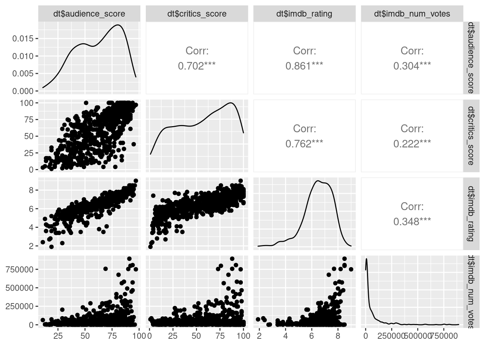
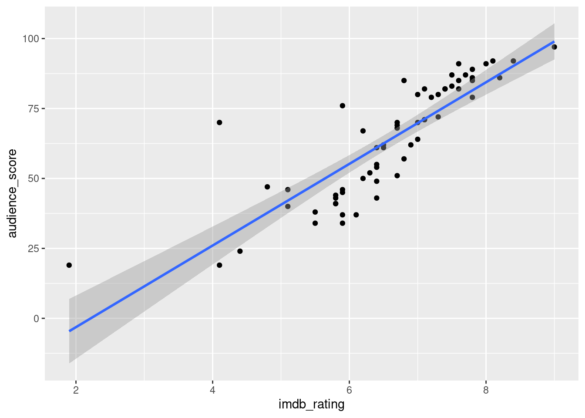

Modelagem
Previsão da disponibilidade de leitos hospitalares
Através da previsão de casos utilizando o modelo de Redes Neurais, calculamos a previsão de leitos disponíveis para as Diretorias Regionais de Saúde do Estado de SP.
Disponível em https://predict-icmc.shinyapps.io/covid-19
Previsão de ocupação de leitos para a DRS Grande SP
Fatores de risco do covid-19
Neste trabalho, realizamos um levantamento dos fatores de risco para óbito em decorrência do covid-19 através do modelo de regressão logístico.
Coeficientes do modelo
Diagnóstico do modelo
Text Mining
Rede de personagens da trilogia O Senhor dos Anéis
Neste trabalho, geramos um dashboard de visualização interativa para nossos dados utilizando o modelo de Reconhecimento de Entidade Mencionada (NER).
Disponível em https://github.com/chicodias/character-network

Grafo de Sentimentos do Livro 1
Previsão do número de casos de Covid-19 através do modelo de Gompertz
Neste projeto, utilizamos o Modelo de Gompertz para prever o “achatamento da curva” de casos confirmados e óbitos decorrentes do Covid-19 no Brasil.
Prevendo o sucesso de filmes através de métodos de Regressão Linear
Trabalho de conclusão do curso de Modelos de Regressão Linear, o qual utilizamos destes para prever o sucesso de alguns filmes com base nas variáveis que tínhamos em nosso conjunto de dados.

Escolhendo uma das variáveis da amostra como parâmetro para o modelo de classificação

Comportamento do modelo com a amostra de teste.